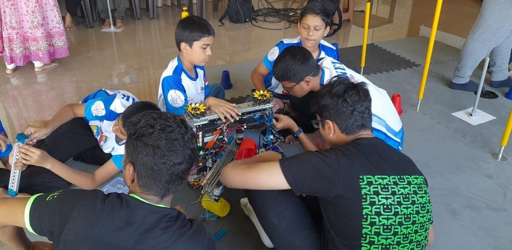
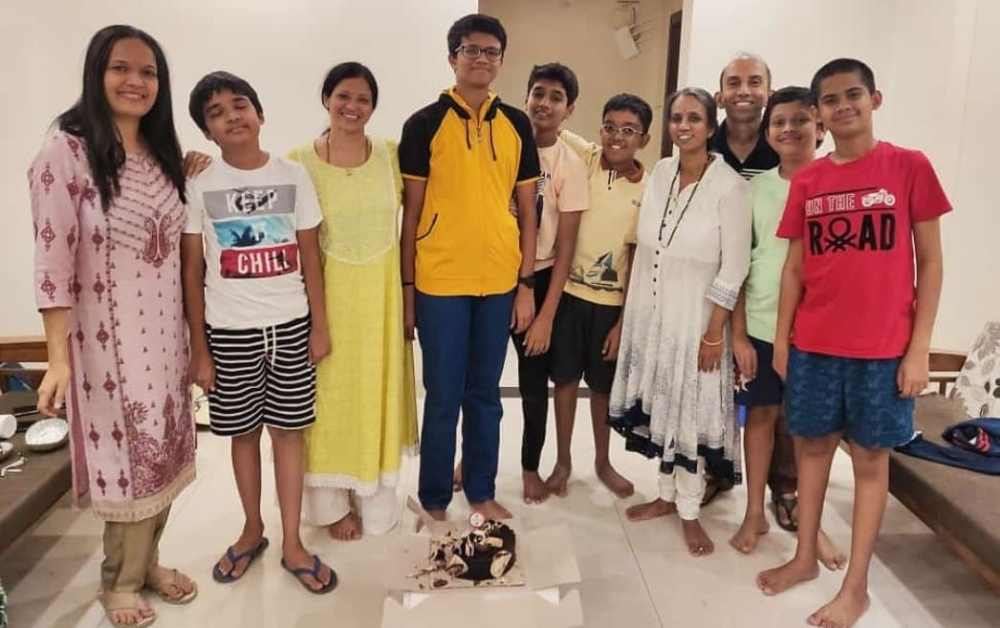

Looking Back at FTC 2022-23: The Hardest Fun I Ever Experienced

How It All Began
I first came across the FIRST Tech Challenge (FTC) through YouTube highlights, and it immediately caught
my interest. The idea of designing and competing with robots in a global competition fascinated me, and
I knew I had to try it. One day, I found out that LegoGoa Axi0m (#22588), a rookie team, was recruiting
members. I wasn’t sure if I’d be selected, but I applied anyway. Our team was officially formed, and our
first meeting was held on November 13, 2022. We were participating for the first time, and the goal was
simple: contribute as much as possible, learn from each other, and grow both technically and personally.
(Team meetup)
Understanding the FTC 2022-23 POWERPLAY Challenge
The POWERPLAY season, presented by Raytheon Technologies, was an intense and dynamic challenge that
pushed teams to their limits. It revolved around strategy, precision, and efficiency, requiring not just
technical skills but also quick thinking and adaptability in high-pressure situations. The objective was
to design a robot that could navigate a field and place cones on junctions of different heights. The
game had three main segments:
➡️Autonomous Period – Robots operated independently for 30 seconds using pre-programmed instructions.
➡️Driver-Controlled Period – Drivers controlled the robots for 2 minutes to score points.
➡️Endgame – The last 30 seconds where teams could score additional points through special tasks.
Scoring required teams to stack cones on poles, create links between junctions, and use strategic
planning to control zones. This made the game not just about building a great robot but also about
teamwork, coding, and real-time decision-making.
 (Playfield)
(Playfield)
For more info, visit: FIRST Tech
Challenge 2022-23 Season
Challenges We Faced
As a rookie team stepping into the grand arena of FTC, we knew the road ahead would be anything but
easy. The journey was filled with hurdles that tested our resilience and creativity at every step. One
of the biggest was procuring parts. Import taxes on FTC kits were high, making it difficult to order
components. Thankfully, our mentor connected with individuals traveling to India, who helped bring in
the necessary kits, reducing our costs. Additionally, every team member had to contribute financially,
and we worked hard to secure sponsorships.
(Initial Building sessions)
(Initial Building sessions)
(Initial Building sessions)
For a more detailed breakdown of our competition journey, visit our team's documentation: LegoGoa
Axi0m #22588 Engineering Notebook
For a more info about our team, visit our team's website: legogoa-axiom.github.io
My Role in the Team
I took on multiple responsibilities:
➡️Co-Head of Robot Building – Led the mechanical design and construction.
➡️Documenter – Maintained detailed records of our build process and strategic planning.
➡️Workshop Conductor – Organized two independent workshops, assisted in one, and conducted over
five FTC
demos across Goa.
Through these roles, I gained immense confidence in public speaking, learned valuable team management
skills, and felt proud of the knowledge I was able to share with younger students and robotics
enthusiasts.
(Outreach at Goa Science Centre, Miramar)
(Outreach at St. Bartholomew's High School, Chorao)
(Workshop at Innovation Hub, Goa)
 (Workshop at Progress High School, Panaji)
(Workshop at Progress High School, Panaji)
 (Workshop at Mushtifund High School, Cujira)
(Workshop at Mushtifund High School, Cujira)
For more info about my workshops visit:
Exploring the Wonders: A journey through Basic Electronics and
Robotics
Spreading the Knowledge: Codeavour awarness session at Progress High School,
Panaji
Team Dynamics: The Fun & The Challenges
Our team had members from different age groups, schools, and educational boards, which led to occasional
communication gaps and conflicts. However, these struggles were expected in a diverse group, and we
learned to adapt. Despite the challenges, we had many fun team activities, including bonding sessions,
brainstorming events, and technical workshops. I really enjoyed my time with my teammates, especially
Venkatesh Dempo, with whom I had a great bond—we were together throughout the journey, and it was a good
time. I also built close friendships with Taksh, Dhruv, Shounak, Parth, Aryan, Samihan, Vighnesh, Viraj,
Sai Pranav and many
others, making this experience even more special.
Our coach had incredibly high expectations, treating every practice session like a real competition. He
pushed me beyond my limits, sometimes with tough criticism, but also with well-earned words of
encouragement. Every mistake was a lesson, and every success was a stepping stone to becoming better.
His guidance played a major role in our progress.
(Team photoshoot)
We also received support from Team Sigma (#20890), an experienced FTC team from RoboFunLab Mumbai &
Ahmedabad. They conducted free online workshops for us, visited in person to guide us, and helped refine
our robot design. We truly enjoyed engaging with them, learning from their experiences, and discussing
ideas. In return, we organized an event to honor their support and contributions.

(Team Sigma’s collaboration session)
(Hangouts with Team Sigma)
(Event pics)
The Final Push: Last Month Before the Championship
As the championship approached, life became incredibly hectic. Since I was co-head of the build team and
head of documentation, my responsibilities piled up. At the same time, my school tests and competitions
were ongoing, making time management a nightmare. I prioritized FTC, often working until midnight to
finalize designs and build strategies.
Average 4 hours per day on team sessions.
Some days working till 11:45 PM.
Continuous research to find the best building techniques.
At times, I was not treated well, but I understood the pressure on our coach and team. This was all part
of the game.
(Robot testing)
(LegoGoa Axi0m kit-Blue alliance)
(Robot photoshoot)
Match Days: The Final Dance
And then, the moment we had all been waiting for arrived—the FTC India Championship, held from March
10-12, 2023, at Balewadi Stadium, Pune. The air buzzed with excitement, and the sheer energy in the
venue was electrifying. It felt like stepping into a battlefield where months of hard work would be put
to the ultimate test. The moment we stepped into the venue, the atmosphere was electric. Teams from
Asia, Europe, and America were present, making the competition truly global.
Day 1: The atmosphere inside the stadium was electrifying. Teams from across India and around the world
had gathered, each showcasing months of hard work. The first day was all about robot inspections,
setting up our pit area, and last-minute tweaks. Our robot needed some modifications to meet competition
standards, so we worked on adjustments while also exploring the event. My fellow teammates spent time
scouting info about the other teams, understanding their strengths, and forming potential alliances and
strategies for the league matches and play-offs.
(Team pics)
(Team pics)
(Late night prep session)
(Late night prep session)
Day 2: This was when the real action began. Our first two matches were nerve-wracking, but all the
effort paid off—we won both! The competition was intense, but we stayed focused, ensuring our robot
performed at its best. Between matches, I was stationed at the pitstop, making sure the robot was
serviced and ready for the next round. We also had our jury session, where we presented our outreach
efforts and technical documentation to the judges. The day ended on a high note, and excitement for the
next round was at its peak.
(Pit Judgement rounds)
(Robot fixing after Match-1, me along with Our Team Head Coach, Sir Saieesh Gandhi)
(League position after Match-2)
(Me with Venkatesh Dempo)
(Late night prep session)
Coincidentally, March 11th was my birthday, and my mother organized a surprise celebration with the
team. It was a great evening with friends, making the event even more special.

(My Bday Celebration ie 11 March 2023)
Day 3: The final showdown. With only a few matches left, we gave it everything we had. The energy in the
stadium was contagious—teams cheering, strategizing, and pushing their robots to the limit. We secured
8th place in our division (Raman Division), an incredible feat for a rookie team. In the playoffs, Team
Sigma selected us as their alliance partner, and together, we fought our way to the semifinals. The
final moments were intense, and although we didn’t reach the finals, our hard work was recognized with
the Motivational Award—a proud moment for all of us.
(Day 3)
(Interview)
(Team Pics with First Manager, Sir Samuel Plasmati)
(with friends)
(with the team staff and LegoGoa Axi0m fans)
Since I was in charge of the pitstop, I had to ensure the robot was repaired and match-ready after every
round. It was exhilarating to work under that pressure. We also had a jury session, where we presented
our entire journey, outreach efforts, and STEM initiatives to the judges.
(Robot Fixing after match-4)
How the Team's Hard Work Paid Off!
Despite being a rookie team, we had a fantastic run:
üëâWon 4 out of 6 matches.
üëâPlaced 8th in our division (Raman Division). Being a rookee team and we being in the top 10 was a
great achievement!
üëâReached the semi-finals in playoffs (thanks to Team Sigma picking us as an alliance partner).
(Into the semis)
üëâWon the Motivational Award.
üëâInvited to participate in the FTC Australia Championship, but unfortunately, lack of funding prevented
us from attending.
(Motivation award winners!)
Personal Growth & Takeaways
This journey shaped me in ways I never expected:
üëâLearned to handle pressure and accept mistakes maturely.
üëâGained technical knowledge that made physics concepts tangible.
üëâBuilt strong industry connections and friendships.
üëâUnderstood the value of hard work and sacrifice.
üëâGrew into a more educated, confident, and experienced individual.
Now, as I turn 18 next year, I realize I can no longer compete in FTC. But the lessons learned will stay
with me for life.
Advice for Future FTC Participants
➡️Listen to your coaches – They know what’s best.
➡️Work hard and never give up – Challenges make the journey worthwhile.
➡️Be smart with your resources – Innovation isn’t just about spending money; hacks (jugaads) work!
Looking back, this journey was nothing short of a rollercoaster—filled with exhilarating highs, crushing
lows, and moments of pure adrenaline. The thrill of competition, the long nights of preparation, and the
friendships forged along the way made every second worth it. Now, I finally understand why students call
FTC “the hardest fun you’ll ever have in high school.” The words hold so much meaning now!
-Aniket Sushant Bhatikar
Date: 11 March 2025